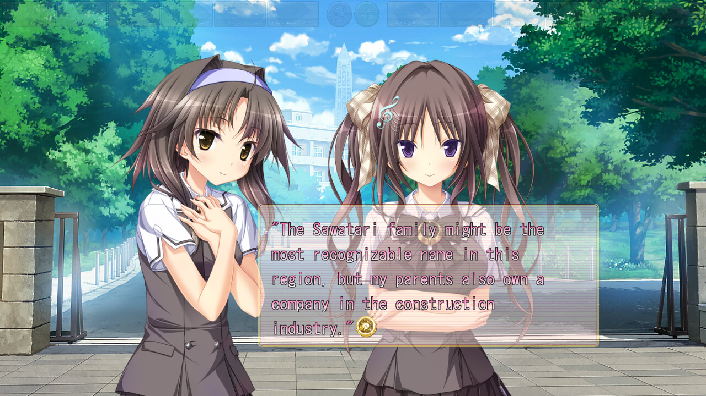
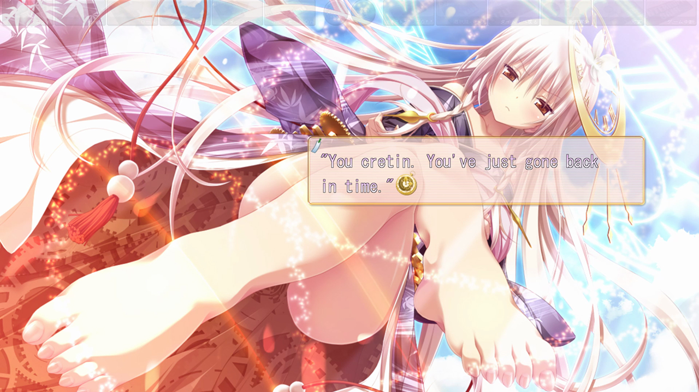
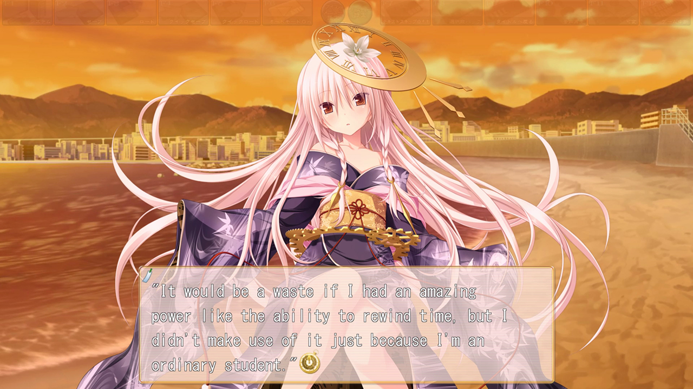

Chrono Clock
Release Date:
April 24, 2015
Developer:
Publisher
Genres:
Romance, Comedy
Novel Length:
Anime Adaptation:
None
Prequel:
None
Sequel:
None

Reviews
"The presentation is excellent, the amount of customization is astounding, and the development of the relationships between characters is endearing."
"If I were ever going to re-read a predominantly slice of life novel then Chrono Clock would be a top candidate."
"When it comes down to it, Chrono Clock is actually a rather good harem rom-com. Fans of the genre should have no issue enjoying it."
About This Novel
Next in line to manage a large corporation is our protagonist, Rei Sawatari. He inherited one very important item from his grandfather, the pocket watch. A mysterious power lurks within that pocket watch.
"The power to go back in time five minutes."
It's a power that he can use as many times as he wants, but it's somewhat difficult to make use of.
If he uses it well, then there's no telling what he could accomplish. He could even save the world... but he shouldn't need to do anything amazing like that.
Our protagonist is just a boy who became a time traveller in order to have fun adventures every day.
Rei Sawatari created a list of cute girls, who he confesses his feelings to one after another, then he uses the power of the pocket watch to turn back time, investigating the girls who might be interested in him without any risk.
After school, on a day just like that. A girl falls from the roof of the school building, splattering against the ground.
When he turned back time to find out what on Earth happened, he found the first year girl, Suzuki Miu, who was right in the middle of confessing her feelings to his best friend when Rei walked in at the worst moment.
Miu was an extremely shy, brilliant, and unlucky girl, And all her courage just to tell someone her true feelings.
Our protagonist; Who could only tell someone his feelings with the help of the pocket watch, was deeply impressed by the girl's determination and decided to help her so that her second confession would succeed.
That was the beginning of their bizarre three-way relationship.
At the same time, the protagonist must gather up the courage to confess his feelings to one of the other heroines.
This is only the prologue to Rei Sawatari's story.
(From VNDB)
Technical Details
Platforms:
Windows
Resolution:
16:9
English:
Fully Translated
Animated Scenes:
None
Voiced:
Fully
You Might Also Like


Get It Now

Recommended
Get It